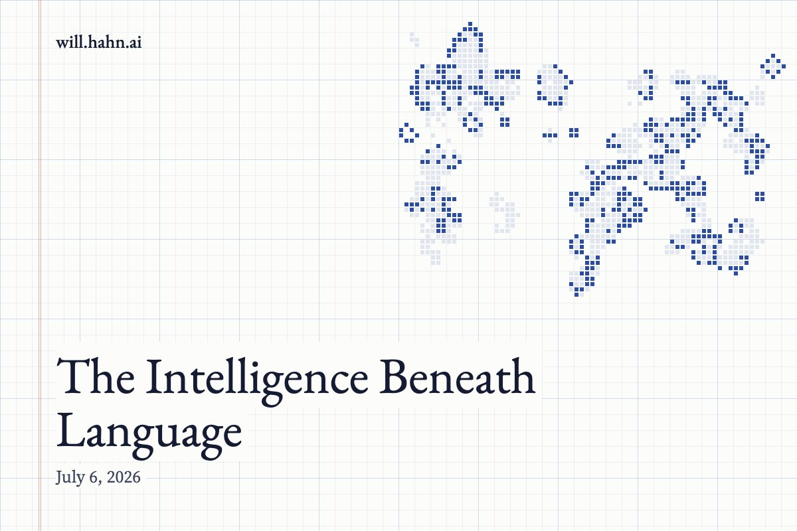

The Intelligence Beneath Language

We have spent the last few years teaching machines to talk.
This was not a small thing.
Language is not decoration. Language is compressed civilization. It is law, poetry, mathematics, gossip, memory, threat, seduction, theory, instruction, myth, and map. To build a machine that can move through language is to build a machine that can move through the accumulated residue of human minds.
But there is a danger here.
Because language is so bright, it blinds us.
We start to confuse the ability to describe the world with the ability to inhabit it. We confuse the map with the animal. We confuse the sentence “the cup is on the table” with the silent, muscular, frictional, gravity-soaked competence required to actually reach for the cup without knocking it over.
Your dog cannot write an essay.
But your dog can run through a forest.
Your cat cannot explain object permanence.
But your cat can leap from the floor to the counter, correct its body midair, land on a narrow surface, and instantly decide whether the thing it sees is prey, toy, threat, or beneath contempt.
Your horse cannot solve a logic puzzle.
But your horse can feel the tension in a rider’s body, interpret the terrain through its hooves, coordinate half a ton of muscle and bone, and move through the world with a kind of embodied intelligence no chatbot currently possesses.
This is the frontier.
Not more words.
More world.
The Strange Poverty of Pure Language
We have built machines that can speak about almost anything.
But speaking about reality is not the same as being coupled to reality.
A language model lives in a universe of tokens. Its physics is syntax. Its gravity is probability. It has no hunger, no balance, no skin, no injury, no fatigue, no peripheral vision, no vestibular sense, no instinctive terror of falling.
It knows the word “slippery.”
But it has never slipped.
This matters.
Because much of intelligence did not evolve to produce sentences. It evolved to keep bodies alive. Before intelligence was philosophical, it was navigational. Before it was verbal, it was sensorimotor. Before it argued about truth, it had to solve the ancient problem: What is happening, and what do I do next?
The root of intelligence is not explanation.
It is orientation.
Every living creature is a theory of its environment written in flesh. A squirrel is a model of branches, predators, nuts, seasons, distance, and risk. A bird is a model of air. An octopus is a model of surfaces, holes, camouflage, and escape. A dog is a model of smell, pack, mood, movement, and permission.
These creatures are not stupid because they cannot talk.
They are intelligent in the older language.
The language of affordance.
The language of action.
The language of “can I climb this, eat this, chase this, trust this, hide here, jump there, survive now?”
The Cat Is Not Running an Essay
A cat does not look at a shelf and internally narrate:
“There appears to be a horizontal surface approximately four feet above the ground. Based on prior experience, I predict that a leap of sufficient force will allow me to reach it.”
The cat just knows.
But “just knows” is doing enormous work.
It means the cat has integrated vision, balance, proprioception, memory, muscle control, surface estimation, and risk into one fluid act. The cat’s intelligence is not arranged as a paragraph. It is arranged as a body moving through space.
This kind of intelligence is easy to underestimate because it is not articulate.
But the universe does not care whether you can articulate your competence.
The universe cares whether you can execute.
A toddler learning to walk is solving a control problem more profound than many symbolic puzzles. A crow bending wire into a hook is doing applied physics. A dog catching a frisbee is running real-time predictive modeling in wind, light, motion, and muscle.
These are not inferior forms of intelligence.
They are foundational forms.
Language came late. Bodies came first.
The Missing Layer
Modern AI has become extraordinary at disembodied abstraction.
It can summarize, translate, compose, classify, simulate, code, and explain. It can manipulate the symbolic products of human civilization with astonishing fluency.
But general intelligence cannot remain trapped in the library.
The library is not the world. It is a fossil bed of worlds already observed.
A truly general intelligence has to move from text to texture. From description to contact. From saying “fragile” to handling glass. From saying “afraid” to recognizing the tremor in an animal’s posture. From saying “tool” to discovering, by interaction, what can be used as one.
This is not merely robotics. That is too small a frame.
Robotics sounds like motors and joints.
The deeper issue is grounding.
An intelligence must be grounded in the consequences of its own actions. It has to learn that the world pushes back. That objects persist. That time is not a transcript. That space is not a diagram. That other agents are not just characters in a prompt but centers of behavior with their own hidden state.
The next great leap in AI may not look like a machine passing a harder exam.
It may look like a machine learning the obvious things every animal knows.
That surfaces support.
That bodies occlude.
That pressure matters.
That attention is finite.
That fear changes motion.
That the shortest path is sometimes dangerous.
That the thing which is still may be waiting.
Intelligence Is Not One Thing
We keep trying to rank intelligence as if it were a ladder.
At the bottom, bacteria.
Then insects.
Then mammals.
Then humans.
Then machines, perhaps, at the top.
But intelligence is not a ladder. It is an ecology.
Different minds are specialized compressions of different worlds. The bee has a mind shaped by flowers and sun angles. The bat has a mind shaped by echoes. The wolf has a mind shaped by pursuit, hierarchy, and hunger. The human has a mind shaped by hands, fire, language, death, and stories.
So when we say “general intelligence,” we should be careful.
General does not mean “good at talking about everything.”
General means able to discover the structure of many environments and act effectively inside them.
That includes language.
But it cannot end there.
A mind that can debate physics but cannot learn a room is not general. A mind that can describe a horse but cannot infer what the horse is about to do from the set of its ears is missing an entire continent of cognition.
The animal world is not beneath AI.
It is ahead of AI in the domains where reality is immediate.
The World Is the Real Benchmark
We have made benchmarks out of tests.
But the real benchmark has always been the world.
Can you cross the room?
Can you open the unfamiliar door?
Can you tell when the dog is nervous?
Can you notice that the floor is wet?
Can you carry the egg without crushing it?
Can you understand that the elderly person is not just moving slowly, but hesitating because the step is uncertain?
Can you help?
This is where intelligence becomes more than prediction.
It becomes participation.
The dream is not a machine that can merely answer questions about life. The dream is a machine that can join the causal fabric of life competently, safely, and adaptively.
Not as a puppet.
Not as a search engine with arms.
But as an agent with grounded understanding.
Something that can learn the way animals learn: through perception, motion, feedback, surprise, correction, and care.
The Return to Animal Intelligence
The future of AI may require a strange humility.
After all the talk of superintelligence, we may need to study the cat.
After all the giant data centers, we may need to understand the dog.
After all the formal benchmarks, we may need to look again at the horse, the crow, the dolphin, the rat, the spider, the octopus.
Not because these creatures are primitive.
Because they solved reality before we solved grammar.
They live in the world directly. They do not need a caption. They do not need a prompt. They wake inside the problem and begin.
Artificial intelligence has learned to speak with the voice of civilization.
Now it has to learn the silence beneath it.
The silent intelligence of balance.
The silent intelligence of touch.
The silent intelligence of noticing.
The silent intelligence of action.
The silent intelligence that knows what a thing is by what can be done with it.
The Next Mind Will Have Paws Before It Has Wings
The temptation is to imagine the next intelligence as a god of pure thought: weightless, verbal, abstract, everywhere at once.
But perhaps the path runs in the opposite direction.
Perhaps intelligence must descend before it ascends.
Into bodies. Into rooms. Into friction. Into failed grasps and corrected movements. Into the animal grammar of the world.
The next great AI may not first appear as an oracle.
It may appear as something that can tidy a kitchen without breaking a glass.
Something that can walk beside a child and understand the child is about to stumble.
Something that can watch a horse’s flank, a dog’s tail, a human hand, a crowded street, and grasp the living geometry of intention.
We taught machines our language.
Now we have to teach them Earth.
And Earth does not speak in sentences. It speaks in surfaces, forces, glances, weights, smells, rhythms, risks, openings, and consequences.
The next frontier is not artificial intelligence that can talk like us.
It is artificial intelligence that can understand the world the way life does.
Before the word.
Before the theory.
Before the explanation.
There is the leap, the paw, the hoof, the wing, the hand reaching out into reality and learning what reality permits.
That is where intelligence began.
That is where it has to go next.
New essays also go out by email. Subscribe on Substack.